HTTP/2 demonstracija
Značajne razlike HTTP/2 u odnosu na HTTP/1.1:
HTTP/2 je binarni protokol, dok HTTP/1.1 podatke prenosi kao nizove znakova
Omogućeno je isprepletanje (multipleksiranje) više tokova podataka (data
streams) preko jedne konekcije: klijent može poslati više zahtjeva, a poslužitelj
može odgovarati u bilo kojem redoslijedu, onda kad odgovori postanu spremni
Uvedena je kompresija zaglavlja poruka koja uvelike sprječava redundantnost
zaglavlja koja je prisutna kod ranijih verzija HTTP protokola
Pointless button
button not clicked yet
Što mjerimo
- Load vrijeme
- Protocol stupac: h2 vs http/1.1
Kako testirati
- F12 -> Network
- Preserve log -> ON
- Hard reload (Ctrl+Shift+R)
- Export HAR (http2.har / no_http2.har)
Stats
Gallery
24 slike 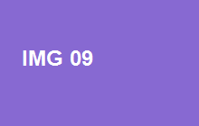
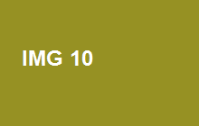
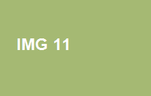
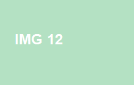
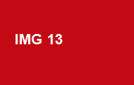
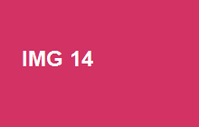
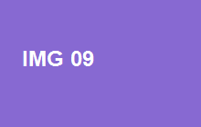
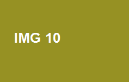
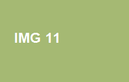
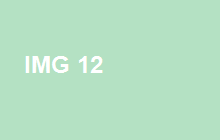
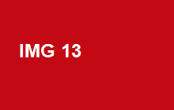
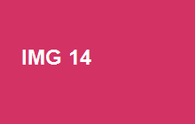

 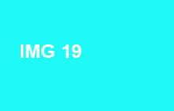
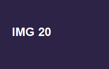
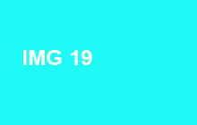
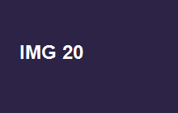
 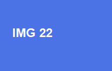
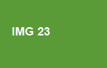
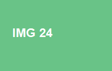
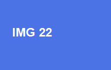
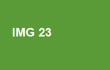
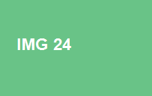
Notes
Ova stranica je dizajnirana s više resursa kako bi se usporedila razlika između korištenja HTTP/1.x i HTTP/2 protokola.
Koristio se nginx web poslužitelj sa self-signed SSL certifikatom.
Sadržaj nginx.conf datoteke kojom uključujemo podršku za HTTP/2 protokol.
#HTTPS server
server {
listen 443 ssl http2;
server_name localhost;
ssl_certificate ssl/server.crt;
ssl_certificate_key ssl/server.key;
ssl_session_cache shared:SSL:1m;
ssl_session_timeout 5m;
ssl_ciphers HIGH:!aNULL:!MD5;
ssl_prefer_server_ciphers on;
location / {
root html;
index index.html;
}
}